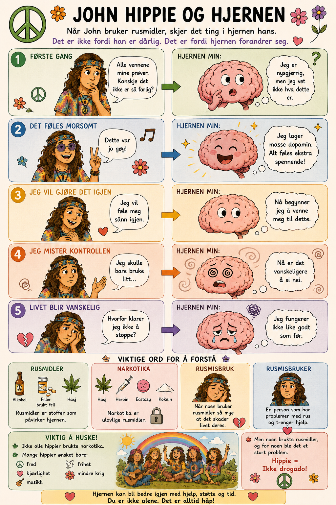

Noen ganger ser vi mennesker på gata som oppfører seg rart. Mamma sier: «Hold deg unna, de kan være farlige.» Men hvorfor? La oss forstå det sammen. 💛
🔢
Slik skjer det – 3 steg
1
🍶
Et rusmiddel er noe som går inn i kroppen. (For eksempel alkohol eller andre stoffer.)
↓
2
🧠
Rusmiddelet forandrer hjernen. Hjernen styrer hva vi gjør – så nå virker den ikke som den skal.

↓
3
😵💫
Personen mister kontrollen. Vi vet ikke hva de kommer til å gjøre. Derfor holder vi avstand.
🔗
Hva fører til hva?
Trykk på en årsak til venstre, så på det den fører til til høyre.
💭
To ting kan være sanne samtidig
🛡️
Vi holder avstand. Fordi vi ikke vet hva de gjør, passer vi på oss selv. Det er lov å gå unna.
💛
Men de er ikke onde. De er ikke slemme mennesker. De er syke – de har et problem som heter rus, og de trenger hjelp.
🌟
Hva gjør jeg hvis …?
Situasjon 1
Hvis jeg ser noen på gata som oppfører seg rart, så …
Situasjon 2
Hvis noen jeg ikke kjenner gir meg noe å drikke eller spise, så …
Situasjon 3
Hvis en venn presser meg til å gjøre noe jeg ikke vil, så …
Situasjon 4
Hvis jeg er redd eller usikker, så …
Situasjon 5
Hvis noen jeg møter på nettet vil treffe meg i virkeligheten, så …
Situasjon 6
Hvis noen sier «alle gjør det» for å få meg med, så …
💛 Husk, Edel: Du passer på deg selv og kan synes synd på dem samtidig.
En person med rusproblemer trenger hjelp – ikke kjeft.